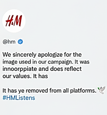
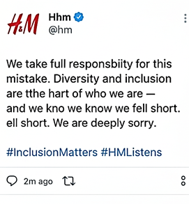
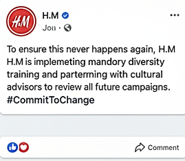
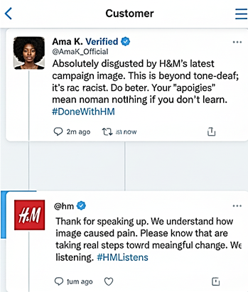
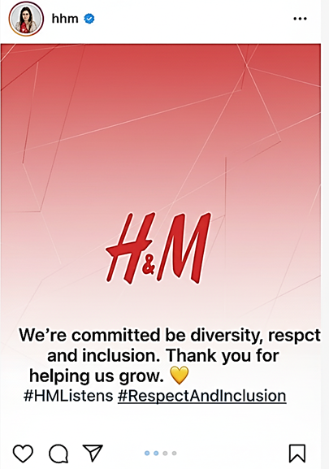

Complaint letter, response letter, and social media series
Item 1: Problem-Summary Statement
Item 1: Problem-Summary Statement
In January 2018, the international clothing retailer H&M came under wide criticism after publishing a picture on its UK website of a young black boy in one of its hoodies that had the text printed on it that read Coolest Monkey in the Jungle. The picture caused a furor on social media, where consumers, activists, and other public figures criticized it as racially insensitive and perpetuating its historical racial stereotypes. The ad belonged to the children's clothing line of H&M, which was photographed and spread on the Internet by the marketing division of the company. Hashtags that declared a boycott of H&M trended all over the world, and celebrities such as The Weeknd and G-Eazy severed professional connections with the store in only a few hours. H&M, in its turn, took down the image, issued a general apology, and said it would review its internal diversity and inclusion practices. The scandal was about the advertising departments of the company, the child model, and his family members, and millions of international customers who were offended by the absence of cultural sensitivity exhibited.
Item 2: Complaint Letter (from consumer to company)
Item 2: Complaint Letter (from consumer to company)
Nader Alazemi228 Willow StreetHouston, TX 77002Email: nader.alazemi@email.comPhone: (832) 541-2890January 15, 2018
Mr. Karl-Johan PerssonChief Executive OfficerH&M GroupMäster Samuelsgatan 46A111 57 Stockholm, Sweden
Subject: Formal Complaint Regarding Racially Insensitive Advertising Campaign
Dear Mr. Persson,
I am addressing this subject because I am concerned about the recent advertisement by H and M where a young black child wore a hoodie that had the label coolest monkey in the jungle printed on it. I was surprised and saddened that such an image was published by a company that has a global and diverse customer base, as I am a loyal H&M customer.
Although this might not have been deliberate, this picture has heavy racial undertones, and it is a grave failure of cultural awareness. This advertisement is extremely offensive because it is associated with historical stereotypes about people of African origin. This lapse has created massive public outrage that has hurt the reputation of H&M as well as consumer confidence.
I am kindly requesting that H&M accept responsibility by publicly owning up to the problem, re-evaluating its marketing approval department, and offering cultural sensitivity and diversity training to its creative divisions, among others. Responsibility and learning would be a clear reflection that would restore the confidence of people in your brand.
Thanks for your time and attention. I am interested in knowing what H&M intends to do so that they can make sure that such incidents do not occur in the future.
Sincerely,(Signature)Nader Alazemi
Item 3: Response Letter (from company to consumer)
Item 3: Response Letter (from company to consumer)
H&M Group HeadquartersMäster Samuelsgatan 46A111 57 Stockholm, SwedenEmail: customerservice@hm.comPhone: +46 8 796 55 00January 22, 2018
Mr. Nader Alazemi228 Willow StreetHouston, TX 77002
Subject: Response to Your Concern Regarding H&M Advertisement
Dear Mr. Alazemi,
I would like to thank you and your letter, which indicated your concern regarding our recent advertisement of a young black child in a hoodie with the inscription of coolest monkey in the jungle. We fully understand how disappointed you are and how much you are willing to give your opinion.
We are greatly displeased to have published this picture, and we appreciate that it was racially insensitive. H&M takes full responsibility for the error and would like to apologize profusely to our customers and communities that were harmed or offended. The incident does not conform to our diversity, respect, and equality values.
To this end, we have taken the image out of all the channels and recalled the product. We are also introducing a new in-house marketing material review mechanism, as well as making diversity and inclusion training compulsory for all employees who will deal with product design and advertising. Also, we are engaging the external cultural advisors to make sure that our campaigns are globally inclusive.
Your feedback is valuable to us, and we will strive to learn important lessons about this incident and ensure that we commit ourselves more to equality.
Sincerely,(Signature)Karl-Johan PerssonChief Executive Officer, H&M Group
Item 4: Social Media Posts (Twitter Series)
Item 4: Social Media Posts (Twitter Series)
Platform: Twitter
Twitter apology 1Twitter apology 2Facebook postCustomer threadInstagram post
Item 5: Reflective Memorandum (≈250 words)
To: Professor Kit Carson WilsonFrom: Nader AlazemiDate: 23/10/2025Subject: Reflection on Project #2 – Formal Complaint and Response Letters with Social Media Component
This project was aimed at proving the successful intercultural and professional communication under the circumstances of corporate controversy. I decided to use the case of H&M 2018 in the spot titled Coolest Monkey in the Jungle, as it demonstrates that cultural insensitivity in advertising may cause the company to become the subject of criticism among the masses. My target writing objective was to reveal how professional correspondence and social media reactions can heal trust and prove responsibility.
The main target of the complaint letter was the corporate leadership, and the tone had to be formal and persuasive, backed by solid reasoning. The press release addressed to the concerned consumers required a professional, empathetic, and solution-oriented response to restore credibility. By comparison, the audience of social media was more varied and extensive, and required brief, clear, and emotionally conscious messages.
Formal communication was enabled by the letter, whereas social media enabled instant communication and interaction with the wider community. The problem was how to make the formality and the authenticity match on the various platforms.
This project increased my knowledge of cross-cultural communication and PR strategies during an emergency. I also got to understand that proper responses should not be limited to apologies since they should also include tangible measures that would deal with the root cause. In general, the given assignment has reinforced my skills to act ethically and with responsibility in multicultural and international settings.